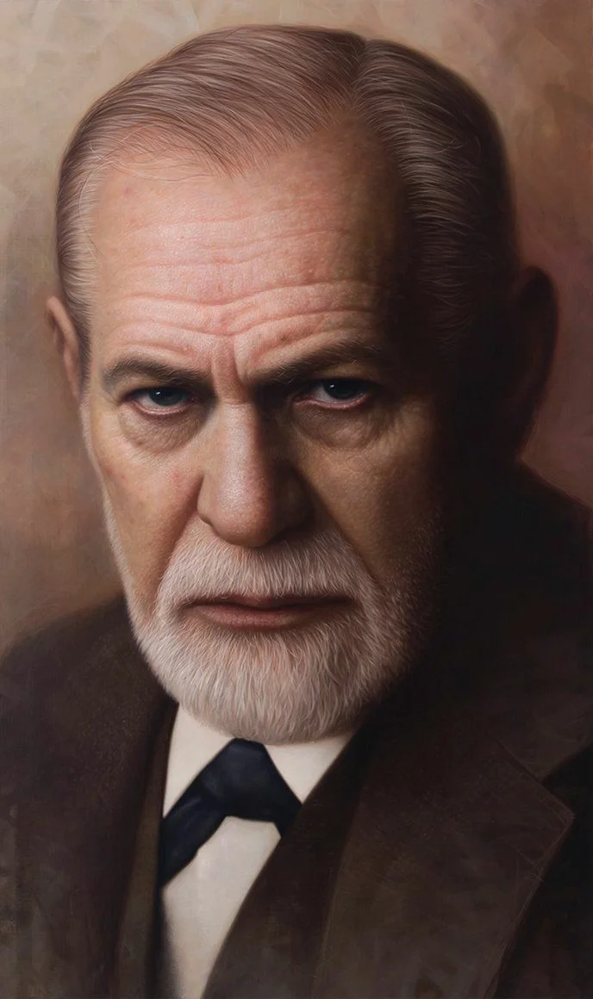
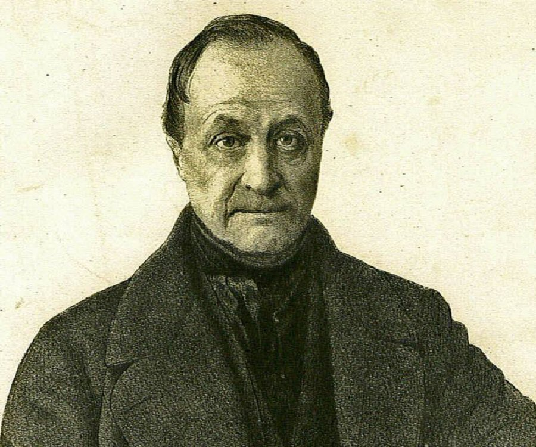

Современная философия
Современная философия уходит своими корнями в середину XIX века. Новый этап развития западной философии тесно связан со становлением так называемого неклассического типа рациональности. Научно-техническая революция, интернационализация и массовизация социальной и культурной жизни, новые аспекты взаимоотношений общества и индивида, пристальный интерес к личности человека, к ее внутреннему самоопределению предопределили особенности этого этапа.
В огромной плеяде современных философов особое место занимают Артур Шопенгауэр и Фридрих Ницше, Эдмунд Гуссерль и Мартин Хайдеггер, Зигмунд Фрейд и Карл Юнг, Карл Поппер и Людвиг Витгенштейн, Жан-Поль Сартр и Макс Шелер, Мишель Фуко и Жан Франсуа Лиотар.
Философия XX–XXI вв. представлена разнообразием школ, направлений, учений. Среди них преобладают тенденции рационализма / иррационализма, идеализма / материализма, антропологизма / натурализма, сциентизма / антисциентизма.
Сциентизм (от лат. scientia – наука) – мировоззренческая философская ориентация, направленная на обоснование абсолютного первенства науки в решении любых социальных проблем, наука признается высшим проявлением человеческого разума. Сциентизм зарождается и проявляется в рационалистическом пафосе интеллектуалов Нового времени («О достоинстве и приумножении наук», Ф. Бэкон, например), развивается в концепциях позитивизма и неопозитивизма (прежде всего философии науки), в аналитической философии, служит основанием для многочисленных концепций технологического детерминизма («революции ученых», «индустриального и постиндустриального общества», «технотронного общества», «информационного общества» и др.).
Антисциентизм не отвергает силу влияния науки на человека и общественную жизнь, но это воздействие понимается им как недостаточное, одностороннее, а часто и разрушительное, негативное. Данная философско-мировоззренческая ориентация направлена на ограничение социальной экспансии науки, требует уравнять науку с другими формами общественного сознания – философией, искусством, религией; контролировать и подвергать всесторонней экспертизе ее изобретения и открытия, чтобы избежать негативных социальных последствий. Антисциентизм находит свое начало в в произведениях нововременных философов-скептиков, предвидевших тупики безудержной веры в прогресс науки и техники: Б. Паскаля, Ж.-Ж. Руссо, И. Канта, А. Шопенгауэра, Ф. Ницше, которые подвергают пересмотру многие классические понятия, как рациональность, истина, социальное согласие и др. В ХХ веке платформа антисциентизма сближает экзистенциализм, герменевтику, франкфуртскую социально-философскую школу, постструктурализм, ряд идей Римского Клуба, идеологию «зеленых», религиозно-персоналистические учения. В крайних формах антисциентисты предлагают «заморозить» или вообще отказаться от дальнейшего развития наук и технологий (концепции «пределов роста», «нулевого роста», технофобские умонастроения и т.п.).
Эти две важнейшие мировоззренческие ориентации в философии прошлого и нашего столетий органически связаны с другими особенностями современного философствования. Для него характерны мозаичность, неоднородность, многообразие концепций и идей. Поэтому главный предмет философского интереса можно выделить лишь в интеллектуальном пространстве того или иного философского направления.
Современной философии в целом свойственен критицизм в отношении к классической рациональности, к методам и формам представления и анализа действительности, в Новое время практиковавшимся в науке и философии. Критика направлена на оптимизм классической философии и науки, их убежденность в могуществе разума и техники, веру в безграничные возможности и гуманистические перспективы социального прогресса, нравственного и художественного в том числе. В умонастроениях ХХ века, отраженных в философских учениях, этот оптимистический настрой сменяется разочарованием и пессимизмом. Критицизм и пессимизм, тем не менее, становятся отправной точкой не столько для «метафизического бунта», сколько для поиска новых оснований бытия, для экспликации новых смыслов и ценностей.
Акцент классической нововременной философии на проблемах гносеологии и методологии смещается в современной философии в область философской антропологии, в сторону исследования проблемы человека, способов и форм его бытия в мире «антропологической катастрофы». Философия отходит от «чистого», преимущественно умозрительно рационалистического философствования, в центре ее внимания оказываются бессознательные, мистические, иррациональные феномены психики человека и социума, интуиция, эмоции и инстинкты, эзотерические практики. Как уже сказано выше, наука рассматривается как важная, но не единственная составляющая многообразного человеческого знания, значимы и чрезвычайно информативны другие пути познания мира: экологический, ценностный, обыденно-повседневный, мистический, эзотерический и пр.
Характерная черта новейшей неклассической философии – толерантное и плюралистическое отношение к многообразным философским направлениям и школам, в основании которого лежат принципы конструктивного и понимающего диалога, отказ от признания абсолютной и единственной точки зрения на мир, идея взаимной дополнительности философских учений, выражающая интенцию к интеграции всего философского знания.
Становление новейшего (современного) этапа развития западной философии по традиции связывают с учениями С. Къеркегора, А. Шопенгауэра, Ф. Ницше. Главной и характерной чертой их философских концепций является последовательное проведение иррационалистических воззрений, согласно которым основа понимания и объяснения мира – не разум, а бессознательные элементы психики (инстинкты, «озарения» и др.) и отличные от мышления формы человеческого сознания, такие как вера, воля, представление, воображение, переживание. Основным предметом философского осмысления становятся причудливые извивы внутренней жизни человека, в призме которой видится и интерпретируется мир общественной жизни: мораль, религия, власть, семья, культура.
 Психоаналитическое учение (фрейдизм), не претендующее на статус философской концепции, тем не менее, оказало огромное влияние на духовное самосознание современности, уловив и выразив неклассические иррационалистические тенденции. Основатель психоанализа Зигмунд Фрейд (1856 – 1939), последователями которого были К. Юнг, Э. Фромм, Г. Маркузе и др., предложил оригинальную модель психики личности, включающую три уровня: «Сверх-Я», «Я», «Оно». Согласно Фрейду, «Я», «несчастное сознание», сдавлено между «Сверх-Я», выражающим ожидания и предписания общества, и «Оно», «подвалом сознания», или бессознательным. Ключевое значение для всего учения Фрейда имеет идея о том, что мотивы и поступки человека определяются не социальными закономерностями, а психическими бессознательно-иррациональными силами, что человеческий разум, безусловный предмет гордости философской классики, лишь маскирует эти силы, но не является средством активного познания и углубленного осмысления реальности. Важнейшим основанием психической жизни, по мнению Фрейда, является «либидо» – бессознательное половое влечение, определяющее противоречия человека и социальной среды, культуры, цивилизации.
Из бессознательного царства инстинктов в сферу «Я-сознания» пробиваются стремления эгоистического, антиобщественного и сексуального характера. «Я» стремится противодействовать деструктивности инстинктивного поведения и вытеснить бессознательное, руководствуясь принципом реальности. Эта работа сознания позволяет личности выстраивать свои поступки в соответствии с социальными традициями и правилами («как принято»), однако вытеснение, блокирование и «замещение» бессознательного приводит к психическим заболеваниям: неврозам, стрессам и т.д. Таким образом, душа каждого человека подвержена власти неизменных психических конфликтов, роковому противостоянию бессознательного «принципа наслаждения» и сознаваемого «принципа реальности»; личность человека оказывается в неразрешимой невротической ситуации: человек бессилен перед разрушающей личность энергией бессознательного, но и не может не следовать обычаям, правилам, нормам и установкам общества.
Методы психоанализа, считают фрейдисты, могут найти при активном участии пациента выход из этой ситуации; самый лучший исход для личности состоит в сублимации, то есть в преобразовании энергии инстинктов и переориентации влечений в сферы нравственно и социально одобряемой деятельности. Именно благодаря сублимации человечество достигло величайших высот в своем саморазвитии, в рождении и становлении искусства, религии, науки, государства, технологий.
Фрейдистская концепция по сей день продолжает оказывать значительное воздействие на многообразные сферы современной культуры Запада, на философско-антропологические исследования и умонастроения в том числе.
Философия существования (экзистенциализм) – наиболее значительное направление философской мысли ХХ века, представленное в творчестве русских мыслителей Н. Бердяева и Л. Шестова, немецких философов К. Ясперса и М. Хайдеггера, французских – Ж.-П. Сартра и А. Камю. Философия экзистенциализма отразила глубокие социальные потрясения первой половины прошлого века, связанные с мировыми войнами, установлением тоталитарных режимов, обратившись к рассмотрению бытия человека в бесчеловечных обстоятельствах кризисных ситуаций и жестоких испытаний.
Экзистенциализм утверждает свободное и неповторимое индивидуально-личностное бытие человека, которое проявляется в его переживаниях. Даже бегло просмотрев заглавия произведений экзистенциалистов, можно судить о каких переживаниях идет речь: «Философия свободы» и «Смысл творчества» (Бердяев), «Бунтующий человек» и «Эссе об абсурде» (Камю). Категория «экзистенция» (лат.: существование), характеризующая человеческое бытие во всей совокупности телесных и духовных состояний, переживаемых «здесь и сейчас», в противоположность определенной и заранее данной сущности, означает непосредственную «открытую возможность» (Сартр) – «существование предшествует сущности»; в потоке разнообразного опыта жизни и переживаний человек самоопределяется, полагает себя сам. Экзистенциальная личность – это свободная и уникальная индивидуальность, раскрывающаяся себе и миру, сотворяющая бытие. Монотонность, размеренность существования человека в мире приводят к утрате личностной неповторимости, а потому обращают человека к небытию. «Подъем, трамвай, четыре часа в конторе или на заводе, обед, трамвай, четыре часа работы, ужин, сон; понедельник, вторник, среда, четверг, пятница, суббота, все в том же ритме – вот путь, по которому легко идти день за днем. Но однажды встает вопрос «зачем?». Все начинается с этой окрашенной недоумением скуки.… Скука является результатом машинальной жизни, но она же приводит в движение сознание», – пишет А. Камю. Так возникают страх, тревога, ощущение абсурдности существования.
Рутина повседневности мешает осознанию себя как экзистенции; для этого человеку требуется проявить свою индивидуальность в экстраординарных формах существования, оказаться в пограничной ситуации, ситуации катастрофы, разрушающей привычные порядки и объяснения, например, перед лицом предательства, потери близкого, смерти. Состоявшись экзистенциально, человек реализует свою изначальную внутреннюю свободу, он «выбирает» и реализует себя как собственный «проект», неся личную ответственность за все совершенное/не совершенное.
Учение экзистенциализма было направлено как против классического рационалистического объяснения человека, находящего определенность человеческой сущности в мышлении, так и против марксистской трактовки этой сущности, усматриваемой в совокупности общественных отношений.
Радикальные и экстравагантные идеи экзистенциальной философии (абсолютизация роли внутренних переживаний, отрицание значимости объективных обстоятельств в личностном становлении) были выражены в литературно-драматургической прозе, стихах, кинофильмах – в нетрадиционных формах представления философствования. Особенно популярен для этого философского направления формат эссе – свободного мыслеизложения, допускающего отвлечения от темы, метафоричность и образность повествования.
 Позитивизм – одно из влиятельнейших философских направлений, основным предметом его рассмотрения являются проблемы структуры и динамики науки, специфика научного познания. Основателем позитивизма был французский философ Огюст Конт (1798 – 1857). Сущность философии позитивизма состоит в критическом отрицании традиционно-классической философской метафизической традиции (Аристотель: «философия – наука о первых причинах и первых началах»), ее универсальной ценностно-мировоззренческой ориентации, поскольку истинное знание опирается на опыт, обосновывается эмпирически и логически (такое позитивное знание дают, прежде всего, математика и естествознание – химия, физика, биология), на практике подтверждает свою эффективность и полезность. Позитивизм выстраивает новейшую систему философии, построенную по образу и подобию естественно-математических наук, и претендует на звание принципиально новой, позитивной («неметафизической») философии, являющейся теорией и методологией науки.
Позитивистская философия претерпела за сто пятьдесят лет своего существования длительную эволюцию; в ее развитии выделяют следующие этапы:
- «первый позитивизм» О. Конта, Г. Спенсера, Дж. Ст. Милля (середина XIX в.), в котором была обозначена основная проблематика позитивной философии, ее задачи виделись в систематизации и обобщении опыта и содержания знаний конкретных наук;
- махизм («эмпириокритицизм»), формирующийся на рубеже XIX – XX вв., названый по имени ученого и философа Э. Маха, который, в отличие от предшественников, свел задачу философии к анализу чувственных начал человеческого опыта (мир – «комплекс ощущений»), тем самым перейдя на позиции субъективного идеализма;
- неопозитивизм (20-е –- 60-е гг. XX в.), идеи которого разрабатывались в трудах Р. Карнапа, М. Шлика, К. Поппера, предметом своих исследований сделал постановку и решение философско-методологических проблем, возникающих в ходе развития науки ХХ века, в частности ее структуры и функций, роли и места знаково-символических форм научного анализа, соотношения теоретического базиса и эмпирического аппарата наук, сущности формализации и математизации и знания;
- постпозитивизм (с конца 60-х гг. XX в. и до наших дней) переводит свой исследовательский интерес с проблем статики науки на проблемы ее динамики. Поэтому в центре внимания К. Поппера, Т. Куна, И. Лакатоса, П. Фейерабенда оказываются вопросы возникновения новых теорий, научных революций, социокультурной детерминации научного познания. Постпозитивизм отказался от линейно-поступательного понимания развития науки, в нем было обоснована противоречивое соотношение традиций и новаций в науке, неизбежность революционных преобразований в ней; постпозитивисты показали относительность противопоставления философии и науки, признали значимость и неустранимость из науки философских идей и принципов («метафизическая нагруженность» науки); выявили обусловленность научных открытий социальными и личностными факторами (экономико- политическими, религиозно-художественными, нравственно- мировоззренческими и т.п.).
В целом философская работа позитивизма во всех его формах способствовала плодотворному исследованию научной деятельности, ее основных принципов и методологии.
Философией постмодерна называют акты философского творчества наших современников (конец ХХ – начало XXI в.), формально объединяя весьма разнообразных мыслителей, для которых, тем не менее, характерен общий отказ от ставших традиционными классического и неклассического мышления, а также изобретение новых образов и средств для экспликации новой реальности, вовлекаемой в орбиту философствования. С новаторскими постмодернистскими (постнеклассическими) философскими произведениями выступили М. Фуко, Ж.Ф. Лиотар, Ж. Делѐз, Ж. Деррида, Ж. Бодрийяр, Ф. Гваттари.
В их трудах было заявлено о «новой рациональности», о необходимости восстановления места и роли разума, который был заменен препарирующим и исчисляющим рассудком науки и философии «присутствия» (Ж. Деррида), подчинив живую творческую мысль сформированным в культуре стереотипам и стандартам понимания и объяснения. Поэтому основные компоненты мировоззрения нуждаются в деконструкции («реальность», «смысл», «субъект», «цель», «истина» и др.): за вещами и словами увидеть потаенное – яркий, множественный и противоречивый «мир означаемого». Философия постмодерности руководствуется принципом антидогматизма, отказывается от жесткой монологичности все объясняющих доктрин, стремится разрушить систему бинарных оппозиций («двоичного исчисления мира»), когда при описании и осмыслении любого феномена удобно, но не продуктивно уходить в абсолютные крайности противоположностей, забывая об органической целостности означаемого: материя и сознание, старое и новое, конечное и бесконечное, рациональное/иррациональное и т.п. Постмодернизм бросает вызов панлогицизму, обеспечивающему единством законов и логических форм «единую точку зрения», ведущему к единой и абсолютной истине. Как заметил У. Эко, высокомерие духа, истина, никогда не подвергающаяся сомнению, «верование без улыбки – это дьявол».
Мир знаний, все информационно-коммуникационное пространство культуры постмодернизм представляет как гипертекстуальную тотальность лингвистических конструкций. «Наше все – мир текстов и языков» – такой парафраз афоризма немецкого классика экзистенциализма М. Хайдеггера о том, что язык – это дом Бытия, может стать мемом постмодернизма. Такое видение постсовременности означает, что культурная деятельность и ее достижения лишь эксплуатируют язык, но не доходят до самой сути вещей. Дело, на взгляд философии постмодерна, состоит в прорыве в «зазеркалье» языка, вернее – в снятии поверхностных знаково-символических напластований с текстов, чтобы постичь «скрытое означаемое». В ином случае преодоление кризиса культуры невозможно, как несостоятельны будут попытки выхода из кризиса интеллектуализма в целом.
Философы постмодерности убеждены, что к нынешнему миру нельзя применять разные основополагающие принципы и установки классического и даже неклассического мышления. Прежде всего, это касается идеи «центра» и «единства»; философия постмодернизма центрирование заменяет принципом ризоматической неорганизованности, а идея единства вытесняется принципом множественности.
В постмодернистской философии единство рассматривается как тотализирующая и репрессивная сила, подавляющая все индивидуальное и экстраординарное. Единство делает мир однообразным, подвергая всеохватной унификации все сферы нашей жизни, в то время как неконтролируемая и свободная множественность побуждает к рождению нового, к богатству различного и особенного в мирном сосуществовании культурных практик и артефактов.
Понятие центра также определенно и жестко несет в себе властные отношения. Периферия всегда подчиняется центру, центрирование составляет основу единого порядка. Отвергаемая, как и любая оппозиция, пара «центр – периферия», заменяется ризомой, которая предполагает гибкое и неожиданное разнообразие постоянно меняющихся («мерцающих») отношений и связей. Мир–«лабиринт» осваивается нами не по чертежам, схемам и картам, подобно классическому путешествию, а по неизведанным и равноценным и равнозначным возможностям «головокружительного приключения» в бесконечности ризомы.
Следующая отличительная черта нашего мира – неупорядоченного и множественного, – его симулятивность: «мир состоит из симулякров». Симулякр (лат. simulo — «изображение» от «притворяться, делать вид») – это «псевдовещь», это копия, представляющая не существующий оригинал. Не имея никаких оснований в реальном мире, симулякры присутствуют во всех сферах культурной и личной жизни, на их основе формируются стили, имиджи, ментальные структуры (Ж. Батай, Ж. Бодрийяр). Создавая видимость присутствия, симулякры могут проявлять себя в предметах, идеях, образах (так, например, телевизионное интервью может быть названо беседой Вариса и Тириона; 60-е годы ХХ века – эпохой винил; актеры, конструкторы, ученые – людьми мира «Шанель», «Мерседес», нанотехнологий и т.п.).
Многие симулякры будят наше воображение, открывая и добавляя в реальность жизненного мира присутствие новых миров. В «Игре престолов» Дж. Мартина, «Властелине колец» Дж.Толкиена, «Звездных войнах» Дж. Лукаса и т.п. представлены миры Вестероса, Средиземья, Вселенная дроидов, клонов и джедаев – миры, порождающие иные языки, ментальности, взаимоотношения государств, существ, богов, свою особую эстетику. Эти миры дают богатство возможностей личностного перевоплощения и сопутствующего изменения мотивации, поведения, образа мыслей; возникают «дополненные реальности», позволяющие жить «здесь» и «там», репрезентируя себя одновременно в разнообразных мирах. Наш современник (особенно молодой человек) заворожен симулякрами мира компьютерных игр, рекламы и развлечений, музыки и литературы, кино и Интернета, порождающими до бесконечности в сагах, сериалах, сиквелах и франшизах все более производные и произвольные симулякры, затягивающие в свои виртуальные сети, но при этом открывающие пути для самореализации личности, недоступные либо невозможные в реальном мире.
Итоги
Для большого числа современников, философов-профессионалов и деятелей культуры постмодернистские идеи и практики подвергаются неадекватной оценке, вызывают настороженное и часто негативное отношение, что обусловлено трудностями радикальной переориентации классического мышления, укорененного в традициях предшествующей культуры, а также глобальностью поставленных проблем. Духовная практика постмодернизма заключается в непрекращающихся и взаимоисключающих действиях: им постоянно осуществляется одновременная процедура деконструкции (разборки) сложившейся культуры и ее традиционных форм – и ее же реконструкция, т. е. операции, связанные с разрушением «первосмыслов» и «сшивкой» смыслов новых, выражающих стремления и возможности самого человека и культуры.
Даже приведенного выше краткого представления основных философских направлений и школ современности достаточно, чтобы сделать вывод об общекультурных тенденциях этого периода: неуклонном стремлении к философскому анализу места и роли человека и науки в новых условиях информационно-коммуникационной цивилизации, к преодолению технократизма и антигуманизма, к росту интереса к вечным и новым проблемам личности и общества.